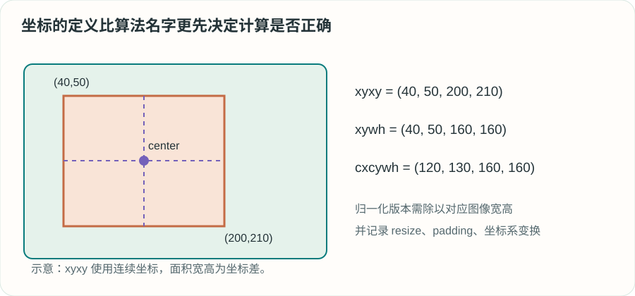
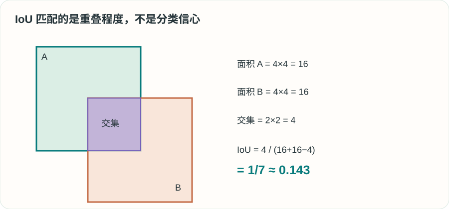
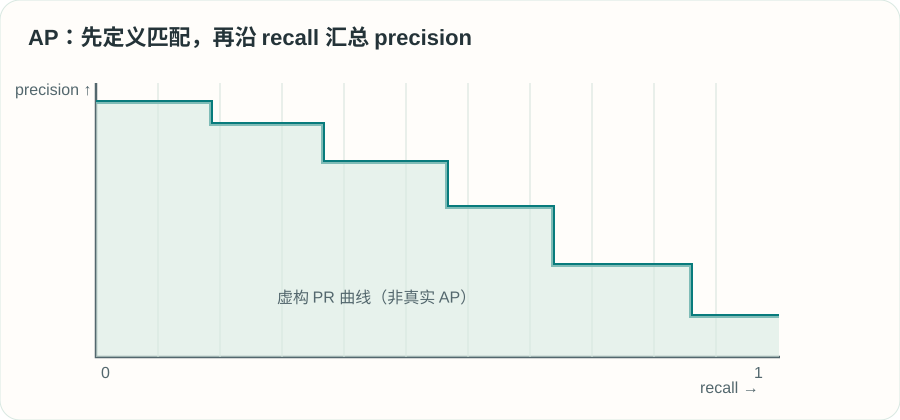
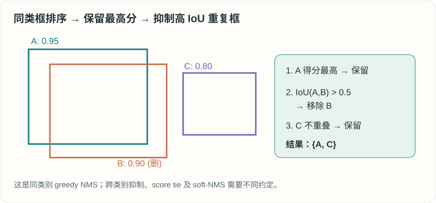

CHAPTER 15 · OBJECT DETECTION
目标检测：从框坐标到可信的 AP
检测不仅是判断物体存在，还要为它找到正确的矩形、避免重复预测，并在明确的匹配协议下计算精确率和召回率。
分类与检测的根本区别不是多输出一串数字
图像分类为整个图像预测类别，目标检测则需要找出数量不固定的一组物体，输出每个物体的类别分数与空间位置。检测系统会遇到尺度变化、遮挡、重复预测、小物体和标注歧义等问题，不能将“把同一个分类器在每处运行一次”直接等价为所有现代检测器。
学习检测首先要理解三件事：框如何编码、预测如何匹配到真值、如何对重复候选进行过滤。它们分别决定几何正确性、评价口径和最终输出数量。

边界框变换必须固定坐标系
xyxy=(x1,y1,x2,y2) 一般把两个角视作连续坐标边界，宽为 x2−x1，高为 y2−y1；xywh=(x1,y1,w,h) 与 cxcywh=(cx,cy,w,h) 是其它常见形式。有些旧的离散像素框定义包含右下角像素，对应面积会带 +1；不能把不同定义混用。
xyxy 转中心宽度形式：y 方向完全同理；假设 x2≥x1 且 y2≥y1。
COCO 常见 bbox 标注格式是以像素为单位的 [x,y,width,height]；许多 YOLO 训练格式使用以图像宽高归一化的 center x,center y,width,height。它们不是同一套字段含义。图像经过 resize、letterbox padding、裁剪后，框必须通过相同几何变换映射到正确坐标。
def xyxy_to_cxcywh(box):
x1, y1, x2, y2 = box
assert x2 "= x1 and y2 "= y1
return ((x1+x2)/2, (y1+y2)/2, x2-x1, y2-y1)
def cxcywh_to_xyxy(box):
cx, cy, w, h = box
assert w "= 0 and h "= 0
return (cx-w/2, cy-h/2, cx+w/2, cy+h/2)
xyxy = (40.0, 50.0, 200.0, 210.0)
center = xyxy_to_cxcywh(xyxy)
assert center == (120.0, 130.0, 160.0, 160.0)
assert cxcywh_to_xyxy(center) == xyxy
print("converted:", center)IoU 是重叠质量，而不是类别置信度
交并比（Intersection over Union, IoU）是预测框与真值框重叠面积除以并集面积。对 A=[0,0,4,4] 与 B=[2,2,6,6]，二者面积都是 16，交集边长 2、面积 4，因此 IoU=4/(16+16−4)=1/7。

分母为两框并集面积，假设均为有效非负面积框且并集非零。
若框完全不重叠，IoU=0。若两个框完全一致且面积非零，IoU=1。对零面积非法框，应该先进行输入校验；评估实现对无效标注可能有不同处理规则，不应以随意返回 1 掩盖问题。
IoU 如何进入 AP/mAP 的定义？
检测评估需要先确定 IoU 阈值，再按类别和置信度从高到低处理预测，并与尚未匹配的真值进行规则化一对一匹配。某个真值若已被更高得分预测匹配，后续重复预测通常算作 false positive。对不同 score 截断得到 Precision–Recall 曲线，再按基准的插值或积分协议计算 AP。

PASCAL VOC 经典 AP@0.5 与 COCO 主指标不同。COCO 的主 AP 对 IoU=0.50,0.55,…,0.95 十个阈值，按每个类别和 101 个 recall 参考点的插值约定汇总后平均；还报告 AP50、AP75、AP_small/medium/large，以及限制每图最多预测框数量下的 AR。比较论文时必须明示 COCO bbox AP、分割 AP 还是 VOC-style AP。
NMS 的删除决定依赖类别和得分排序
经典 greedy Non-Maximum Suppression（NMS）先按分数选中最高框，再删除与它 IoU 超过指定阈值的同类候选，重复直至候选耗尽。它有助于减少重复框，但阈值过低会误删拥挤物体，过高又会保留重复预测。常见 torchvision.ops.batched_nms 支持按类别分别抑制，而朴素全局 NMS 会错误地让不同类别互相抑制。

Soft-NMS 会按重叠程度衰减部分候选得分，而非立即删除。DETR 等基于 set prediction 与二分匹配训练的检测器与经典候选框 + NMS 流程不同，不能把 NMS 说成所有目标检测模型必需的最后一层。
def box_iou(a, b):
x1, y1 = max(a[0],b[0]), max(a[1],b[1])
x2, y2 = min(a[2],b[2]), min(a[3],b[3])
intersection = max(0.0,x2-x1)*max(0.0,y2-y1)
area_a = max(0.0,a[2]-a[0])*max(0.0,a[3]-a[1])
area_b = max(0.0,b[2]-b[0])*max(0.0,b[3]-b[1])
return intersection/(area_a+area_b-intersection) if area_a+area_b"intersection else 0.0
a=(0.,0.,4.,4.)
b=(2.,2.,6.,6.)
assert abs(box_iou(a,b)-1/7)<1e-12
boxes=[a,(0.5,0.5,4.5,4.5),(8.,8.,10.,10.)]
scores=[0.95,0.90,0.80]
indices=sorted(range(3),key=lambda i:-scores[i])
keep=[]
while indices:
i=indices.pop(0)
keep.append(i)
indices=[j for j in indices if box_iou(boxes[i], boxes[j])<=0.5]
assert keep == [0,2]
print("toy NMS kept indices:", keep)两阶段、单阶段、anchor-free 与 DETR 的边界
两阶段检测器通常先提出候选区域，再在候选上精细分类与框回归，R-CNN 与 Faster R-CNN 是代表。单阶段检测器通常直接在密集位置上输出预测，例如部分 YOLO、SSD 系列；anchor-based 使用预设参考框，anchor-free 则采用中心点、角点或其它不依赖预置 anchor box 的框参数化。
DETR以目标 query 与 set prediction 搭配二分匹配损失，减少经典重复候选与 NMS 的需求。它不能简单归类为“YOLO 加 Transformer”，也不意味着所有 DETR 变体结构相同。无论架构如何，最终都要面对评价协议、标注一致性、漏检和误检的权衡。
检查理解：同一个真值框周围有 5 个高分预测都达到 IoU≥0.5，是否算 5 个 TP？
在常规一对一匹配协议下，一个真值只能匹配一个预测，其它重复预测一般记为 FP（还需满足基准中的忽略规则及匹配顺序）。
基准与官方代码
文中的框示例、NMS 分数和 PR 曲线均为教学构造，不是 COCO 模型跑分；不同库版本可能采用特定平局与忽略规则。